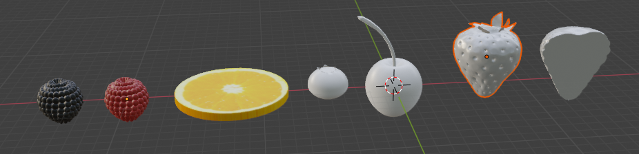
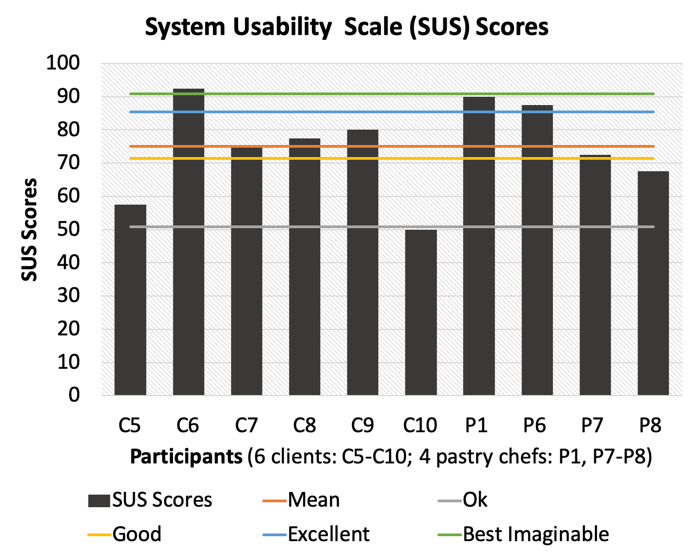

SocialVR is defined as a VR-based social interaction technology, which allows multiple users who are physically separated to interaction with each other in a shared virtual space.
Cake_VR is a VR-aided collaboration system, allowing cake makers and clients to collaboratively design unique cakes remotely in a shared virtual space. It is my master thesis project, collaborating with CWI (Centrum Wiskunde & Informatica), the Center of Mathematics and Computer Science in the Netherlands.
In this project, I want to explore how to integrate co-design methodology to customization services to increase customer participation and user satisfaction. I choose the use case of cake customization of services cuz I am a super fan of desserts and in Delft there are a lot of super nice bakeries for me to immerse in the context. From my initial research, I found that clients communicate about cake design with pastry chefs in face-to-face meetings, followed up by online chat remotely. The current communication way is insufficient for the users to convey and understand abstract design ideas.

I am wondering, is SocialVR (a multi-user VR space) a promising tool for people to “bake” cakes together, for its proficient 3d visualization and operation? After that, I built up the research lens of this project, exploring the potential of socialVR for supporting remote co-design practices in the customization retail context.
SocialVR is defined as a VR-based social interaction technology, which allows multiple users who are physically separated to interaction with each other in a shared virtual space.

Co-design involves customers into the design process and decision-making of the product development, together with professional designers.

This project followed a coherence research-through-design process. Literature review and user research were conducted to inform the design concept and requirements. After that, the design concept was implemented into a form of a medium-fidelity VR prototype. The prototype was validated by the user tests (10 samples), to investigate the impacts of socialVR tool on co-design activities, as well as evaluate to what extent the design concept was realized and implemented.
The first step is user research, aiming to understand the current interaction between clients and cake makers of the customized cake services . Here, I want to explore two questions.
In order to answer these questions, I interview 5 cake makers and 4 clients who have personalized cakes before. Context inquiry was conducted in the bakeries.
I transcripted the interview audio recordings and conducted a thematic analysis. Here, I conducted two main categories: (1) Personal experience of bakers and clients (2) Journey of client-baker communication. This information led to two research results.
The result one is the communication workflow of client and bakers for generating ideas and making design decisions. Three phases were identified: (1) Client input, (2) Ideation and negotiation, (3) Agreement.
Based on the insights above, I came up with 8 design requirements to support the 3 phases of the co-design process. Eash design requirement aims to fix the latent need, deal with the pain points, or facilitate the main action of the co-design activities. These requirements are the main functionality or interaction techniques of CakeVR, they will be incorporated in the system design and storyboard, and implemented in the following process of VR development.
Based on the design requirements, I drafted the general system of CakeVR. It is a virtual sapce where two users can meet each other represented as cartoonish avatars by wearing HMDs. They can switch the virtual environment between a virtual bakery and an event context where the cake would be consumed. Opertation interfaces were offered for them to do 3d works, and the 3d models will be visualized real-time.
This storyboard indicated the ideal virtual co-design process in CakeVR.It supports a coherent co-design process from preparation, initial idea discussion, ideation and negotiation to confirmation.
The layout of buttons on VR handles could be a huge cognitive burden for users (especially for clients who just use it one time). Thus, I try to make it as simple as possible. ‘B’ button is for clicking on all the UI buttons of virtual screens, which already cover most of the functions of CakeVR. ‘A’ button for 3d drawing. The ‘Gripping buttons’ of both hands are used for gripping 3d objects.
I did research on the literature about gesture-based 3d operation commands, and then adapted them. Finally, I came up with a set of simple gestural grammar for the basic 3d manipulations: translation, rotation, scaling (x-y axis, z axis).
The development process was generally divided into three phases: [1] 3d modelling in Blender; [2] VR interaction development in aid of C# for Unity; [3] Multi-user connection and data sync by PhotonPun.
PHASE1 - 3d modelling and shading and UV shading in Blender, to create the 3d shapes and visual texture of the mostly user cake component models.



PHASE2 - 3d manipulatin, UI interaction and the upper body motion of avatar is developed with C# in Unity, together with Oculus integration.


PHASE3 - PhotonPUN is used to connect the multiple users via the server, and syncronize the 3d data, motion and function calls between the users.


After implementation, this prototype was evaluated by 10 users in cake customization (4 cake makers, 6 customers who used to customize cakes). This validation aims to explore two research questions
A dual-user test was performed including one participant (play the role of client) and one researcher (play the role of cake maker). In CakeVR, they need to collaboratively design a cake for a specific context (i.e., event, time, location) which are generated by the participants themselves.


The procedure of the test is divided into 3 phases:
[1] A skype interview is performed one day before the VR test, for inspiring the participants to generate a context for which the cake would be made. The outcome of the interview is a collection of reference images and key words which would present the cake idea.
[2] These reference images will be loaded into the VR application for the formal VR co-design sessions.
[3] A post-test interview will be performed, and the participants were asked to fill in the System Usability Scale questionnaires (SUS).

The VR tests were performed in the researcher’s studio. In order to simulate remote communication, a physical separation was set between the two users. They communicate via skype wearing a noise-cancelling earphone.

OBSERVATION
I did an observation study by watching the screen-captured video of the participant’s view in VR, in order to investigate their behavior pattern.
THEMATIC ANALYSIS
Additionlly, I did thematic analysis by clustering the significant quatations in interviews, to investigate their experience with regard to social interactin and 3d work in co-design.

1. Engagement in creative tasks
I made a video annotation and explored the activity pattern of each design session. I found that among the six customer participants(C5-C10), two of them are “active co-designer” (C6, C9)while the other four are “passive co-designers”(C5,7,8,10). From the “activity pattern”, you can see that active co-designers spent more time in building up and cake while the baker just occasionally gave advice and offered assistance in 3d building. However, the passive co-designers just convey their ideas to bakers and let cake makers build up the cake according to their requirements, generally they spend little time in cake-making.
2. Efficiency of communication
The efficiency of communication about cake ideas was highly improve due to the real-time 3d manipulation and embodiment. Collaborators can quickly edit the cake to show and evaluate their design ideas, and quicky reach consensus.


3. Shared understanding
All the participants claimed that CakeVR helped to build up better shared understandings of the design process and fianl decisions between collborators, due to the abundant visual evidence (i.e., images, 3d models), interative 3d visualization as well as intuitive dectic guestures with hand or lase pointers.


4. Easy system & usability
All the participants confirmed that the system, especially the gesture-based 3d manipulation was quick to learn and easy to use. This conclusion is also supported by the results of System Usability Scale.
This conclusion is also supported by the results of System Usability Scale, in which 6/10 participants gave a score higher than the level "good".


1. Limited creative resources
All the participants thought that the preset model in the toolbar was insufficient for the free design work. One participant claimed that he want to get access to the Internet search engine for more inspiring resources.
2. Insufficient fidelity of design outcome
Although some participants thought the the fildelity of the final design outcome was not sufficient enough for them to percieve the cake ideas in a detailed way, some other participants thought that such fidelity was sufficient for them to get a general concept of the aesthetic and configuration of the cake.
3. Affective interaction and co-presence
The lack of facial expression and emotional perception in virtual avatar leads to different user experience on participants who have different needs for emotional connection in collaboration.
For people who have higher requirements in emotional connection in work, they were negatively influenced, and hence, less engaged..
But for people who have lower needs for affection interaction in, there is little impact, or positive user experience.

We validate each requirements by asking two questions, with regard to the user experience and utility of the design requirements. The result shows that 80% of the design requirement are helpful to the co-design work, and four of them are realized in a good quality.
I am still working on this project after graduation, writing it as an academic paper for HCI conference submission. The most essential improvement is the realism of virtual scene, which is proved to be a significant factor of the user's feeling of presence. Also, the layout of virtual space, and the creative resource are also improved.